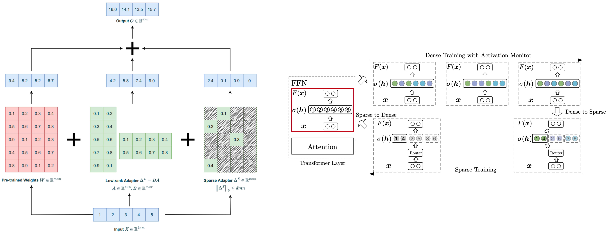
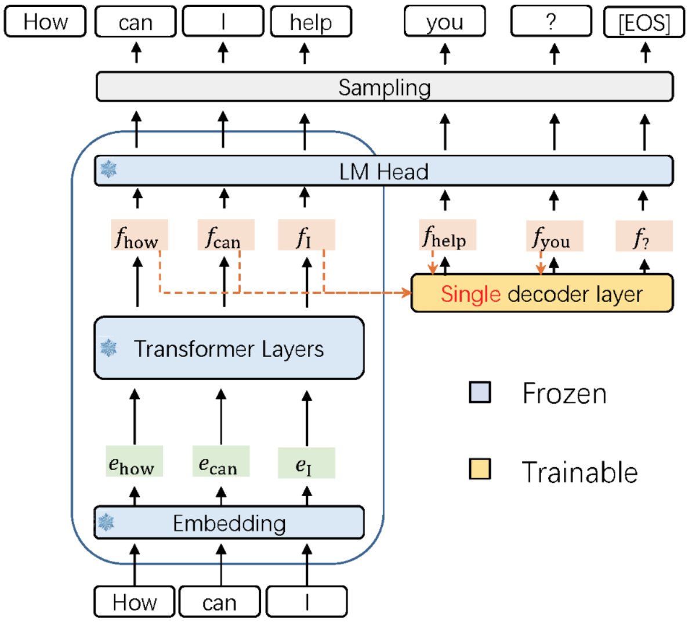
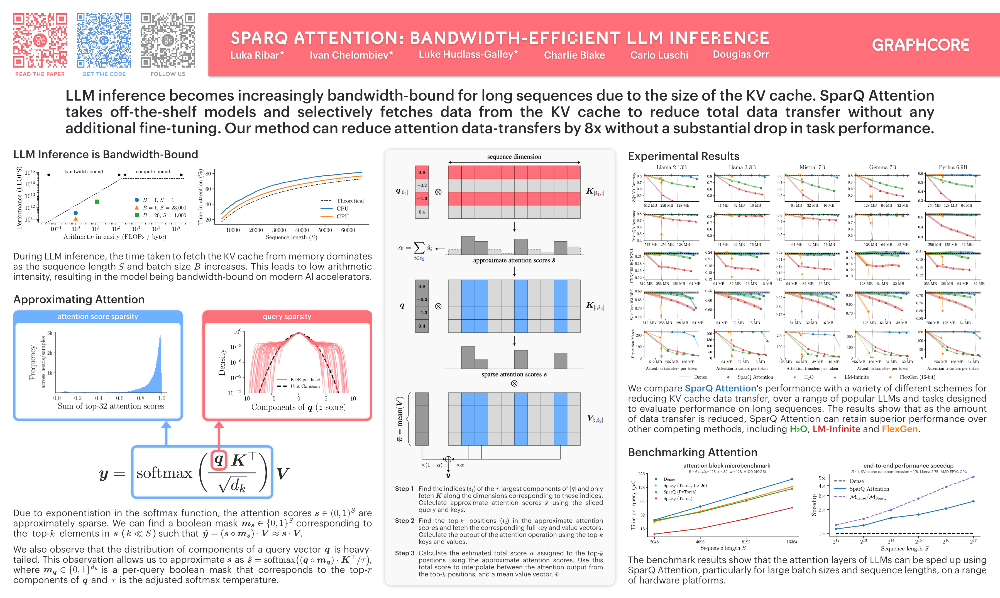

Our ICML 2024 roundup: sparsity, speculative sampling and schnitzel

The 2024 International Conference on Machine Learning (ICML) was held last month in Vienna, Austria. As one of the "big three" AI conferences, alongside ICLR and NeurIPS, it attracted thousands of AI researchers and practitioners from around the globe. In this post, we highlight some of the topics and papers that piqued our interest.
All things LLMs
Perhaps unsurprisingly, LLMs continue to be the talk of the town - a quick search at the ICML schedule shows there were over 300 posters presented with either "LLM" or "language model" in their title.
A number of these LLM papers aim to address the inefficiencies of pre-training and fine-tuning these models. Tackling inefficient fine-tuning, RoSA: Accurate Parameter-Efficient Fine-Tuning via Robust Adaptation introduces a parameter-efficient fine-tuning (PEFT) strategy that jointly trains low-rank and highly-sparse components, outperforming other PEFT approaches such as LoRA. Exploring the Benefit of Activation Sparsity in Pre-training proposes incorporating sparse computation within FFN layers in the later stages of pre-training, achieving up to 1.44x pre-training speed-up and improved inference efficiency. Accelerating Transformer Pre-training with 2:4 Sparsity considers semi-structured pruning as a practical hardware-aware technique to accelerate pre-training.

Inference was another topic receiving a lot of attention (forgive the pun), due to how expensive autoregressive generation can be. Several works build upon speculative sampling to improve inference. Accelerated Speculative Sampling Based on Tree Monte Carlo relates the technique to the concept of maximum coupling, a strategy in Monte Carlo simulations. By reframing the distribution from the token space to a tree space, this work obtains a higher average number of accepted tokens compared to conventional speculative sampling, and thus can accelerate performance. EAGLE: Speculative Sampling Requires Rethinking Feature Uncertainty suggest a draft model which comprises of a single (trainable) decoder layer operating on the feature level of the target model.

Addressing the cost of large KV caches was another popular angle being investigated in the LLM inference space. Works such as Get More with LESS: Synthesizing Recurrence with KV Cache Compression for Efficient LLM Inference, LoCoCo: Dropping In Convolutions for Long Context Compression, Dynamic Memory Compression: Retrofitting LLMs for Accelerated Inference and CaM: Cache Merging for Memory-efficient LLMs Inference deviate from eviction methods by storing less influential token data in a compressed state.
LESS adopts a low rank approximation of this state, whereas LoCoCo and Dynamic Memory Compression (DMC) utilise a weighted combination of tokens (LoCoCo uses 1D convolutional kernels that dynamically calculate mixing weights for each KV cache slot, whereas DMC introduces a fine-tuning method to determine whether a token should extend the KV cache or be accumulated into a weighted average). CaM merges to-be-evicted tokens with higher attention scores into subsequence tokens.
Collectively, the above papers support the notion that eviction-based approaches are rather limited, and not robust to many long-sequence tasks. At Graphcore Research, we've observed the same limitations, which prompted our work on SparQ Attention, which was also presented at ICML this year.

Other papers investigating the KV cache include KIVI: A Tuning-Free Asymmetric 2bit Quantization for KV Cache, which proposes a 2-bit compression scheme for the KV cache (motivated by a study of the KV cache element distribution in various LLMs), and InfLLM: Training-Free Long-Context Extrapolation for LLMs with an Efficient Context Memory, which uses representative tokens as a way of compressing blocks of evicted tokens.
Other research topics
Aside from the large number of LLM papers, a number of different topics and works caught our eye:
-
An area of interest in AI safety is the idea of "model stealing", the ability to infer information about the model weights or architecture by making queries to its API. The secrecy surrounding models from companies such as Google and OpenAI is ascribed to the competitive landscape and safety implications of large-scale models. The ICML paper, Stealing Part of a Production Language Model, investigates a cheap and effective attack which can recover the hidden dimension of a model, and is extended to recover the the final output projection matrix that maps from the final hidden layer to the output logits (up to symmetries). This approach highlights potential attacks on supposed "black-box" models, from which the paper suggests some potential defenses and mitigations.
-
The Lottery Ticket Hypothesis made waves in the AI field over five years ago, when it was observed that there are highly sparse subnetworks (lottery tickets) within initialised models that, when trained in isolation, attained comparable test performance to the dense model in a similar number of iterations. Subsequently, identifying these subnetworks early on during training has been the subject of many works. No Free Prune: Information-Theoretic Barriers to Pruning at Initialization suggests that sparse networks which generalise well require a heavily data-dependent mask, which is not available without the fully-trained dense model. Therefore, while lottery tickets do exist, they depend on training the full network first, and thus cannot be found quickly.
-
Large transformer decoders, generating via autoregressive decoding, have been the de facto approach for generative language modelling for a number of years now. This is despite the limitations associated with them such as the quadratic complexity of attention. In pursuit of finding alternative approaches to autoregressive inference, diffusion has often been considered a possible direction to consider. Diffusion has demonstrated its generative capabilities in modalities such as images and video, but until recently it has struggled to rival autoregressive modelling on discrete data domains such as language. Discrete Diffusion Modeling by Estimating the Ratios of the Data Distribution makes strides in this direction by introducing a new loss, score entropy, which extends score matching to discrete spaces. The Score Entropy Discrete Diffusion (SEDD) models introduced in this paper outperform existing language-diffusion models, and are competitive with autoregressive generation methods. This paper gives hope that alternative efficient methods for language modelling are viable, and will be an interesting space to watch.
-
Actions Speak Louder than Words: Trillion-Parameter Sequential Transducers for Generative Recommendations introduce generative recommenders for overcoming the scaling bottlenecks found in classicial DLRM-style recommender systems. The do this by formulating retrieval and ranking tasks as a generative problem over user actions. The authors believe this could represent a potential ChatGPT moment for recommendations, so will be exciting to see how the field of recommenders evolves.
-
Graph Foundation Models are Already Here is a position paper on foundation models for graphs, investigating the transferability principles across graphs and tasks, and challenges in scaling these models.
Summary
There are many more fantastic papers presented at ICML which we didn't mention in this post. It's clear that despite the increasing commercialisation and deployment of AI models, AI research continues to flourish. We look forward to seeing which models and directions capture the imagination of the AI research community in the months and years ahead!
Many thanks to Luka Ribar, Mark Pupilli, Alberto Cattaneo, Charlie Blake, Kerstin Klaser and Paul Balanca for their help in summarising papers and reviewing this post.